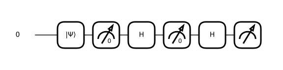

Station · measurement
The atoms you threw away come back
Send silver atoms through a magnet and the beam splits in two. Block one half. Now add a second magnet at right angles, and a third — and the half you removed is back. 1922 apparatus, no computer required.
The beam line
Try these
Start with Z then Z: the beam stays where you put it. Then add the X magnet in the middle and watch what it does to a measurement you had already made.
The same state on the Bloch sphere
Show the maths
The measurement postulate. A magnet along measures the observable . Outcome has projector , and blocking a beam is that projection made physical:
The input state. The phase knob prepares
Measured along , the phase cancels when the amplitude is squared — for every :
Along it survives, because the two amplitudes now interfere instead of being squared separately:
That is the number to watch. Where it appears depends on the magnets. If an magnet is doing the filtering, it sets how many atoms survive; the survivors are all , so the final up/down split stays stubbornly 50/50. Turn the filtering off and the phase steers the split instead. The phase is never destroyed by an magnet — it just moves into a different number.
The three-magnet result. Filter , so the survivors are exactly . Rewrite that in the basis, filter again, and rewrite back:
Half the atoms leave down — the very outcome physically removed at magnet one. Nothing put the spin back. Asking the question destroyed the answer to the question, because the two observables do not commute:
Non-commuting observables have no common eigenstates, so no state has a definite value of both. This is not a limitation of the apparatus.

Hover or tap any gate to see what it does.
verify/test_reference.py.